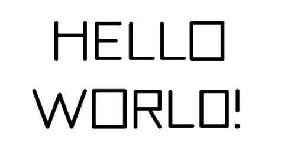

CSS is Cool
As a web developer, one of the most exciting aspects of working with HTML and CSS is the endless possibility of creativity and customization. CSS (Cascading Style Sheets) is a powerful tool that allows us to control the look and feel of our websites, and there are so many cool features that we can use to make our websites stand out from the crowd. In this blog post, we’ll take a look at some of the most interesting and useful CSS features (broken in to 2 parts) that are available to us as web developers.
Part One
-
Custom fonts:

of the first things that people notice when they visit a website is the font. The font can set the tone for the entire website and can either make it look professional and trustworthy, or unprofessional and untrustworthy. With CSS, we have the ability to use custom fonts that are not available on the user’s computer. This can be especially useful if you want to use a unique font that is not widely available or if you want to use a font that is not supported by the default system fonts. To use a custom font, we simply need to use the @font-face rule in our CSS file and specify the font file that we want to use. -
Responsive Design:

In today’s world, it’s important for websites to be accessible on a variety of devices, including laptops, tablets, and smartphones. Responsive design allows us to create websites that adapt to the size of the user’s screen, ensuring that our websites look good no matter what device they are being viewed on. With CSS, we can use media queries to specify different styles for different screen sizes, allowing us to create websites that are optimized for different devices. -
Animations:
CSS animations allow us to add movement and interactivity to our websites, making them more engaging and dynamic. With the @keyframes rule, we can specify the stages of an animation and control how the element changes over time. We can also use the animation properties, such as animation-duration and animation-delay, to control the timing of our animations. -
Gradient:
Gradient Text
Gradients are a great way to add a bit of visual interest to our websites, and with CSS, we have the ability to create gradients with ease. We can use the linear-gradient function to create gradients that transition from one color to another in a straight line, or the radial-gradient function to create gradients that transition from the center of an element outwards. -
Box Shadows:
box-shadow
Box shadows are a simple but effective way to add depth and dimension to our websites. With CSS, we can use the box-shadow property to specify the color, size, and direction of a shadow on an element. We can also use the inset keyword to create inner shadows, which can be used to give the illusion of depth on flat elements. -
Filters:
CSS filters allow us to alter the appearance of an element in a number of ways, including adjusting the brightness, contrast, and saturation of an image. We can also use filters to create special effects, such as blurring or grayscaling an element. Filters can be a great way to add visual interest to our websites without having to rely on heavy graphics or large images.
Part Two
CSS, or Cascading Style Sheets, is an essential element of web development. It is a language used to style and layout web pages, and it is the foundation upon which modern web design is built. Without CSS, web pages would be static and lifeless, lacking the visual appeal and interactivity that make the internet such a powerful and engaging platform.
One of the primary benefits of CSS is its ability to separate the content of a web page from its presentation. This separation of concerns allows web developers to focus on the structure and meaning of the content, while leaving the visual design to CSS. This makes it easier to create and maintain web pages, as it allows for the creation of reusable styles and layout patterns that can be applied across multiple pages.
CSS also makes it possible to create web pages that are responsive and adaptable to different devices and screen sizes. By using CSS media queries, developers can create styles that are tailored to specific devices or screen sizes, ensuring that a website looks great no matter how it is accessed. This is particularly important in today's world, where people use a variety of devices to access the internet, including smartphones, tablets, and laptops.
CSS is also essential for creating interactive and engaging web pages. With CSS, developers can create hover effects, animations, and other dynamic features that make a website more interactive and immersive. These types of features are increasingly important in today's digital world, where people expect a high level of interactivity from websites and apps.
In addition to its many functional benefits, CSS is also important for the overall performance and speed of a website. By using CSS to create efficient layouts and optimize image sizes, developers can create websites that load quickly and perform smoothly, improving the user experience and increasing the likelihood that people will return to the site
conclusion
In conclusion, CSS is a powerful tool that allows us to customize the look and feel of our websites in a variety of ways. From custom fonts and responsive design to animations and filters, there are so many cool features that we can use to make our websites stand out from the crowd. As web developers, it’s important to stay up-to-date on the latest CSS features and to continuously learn and